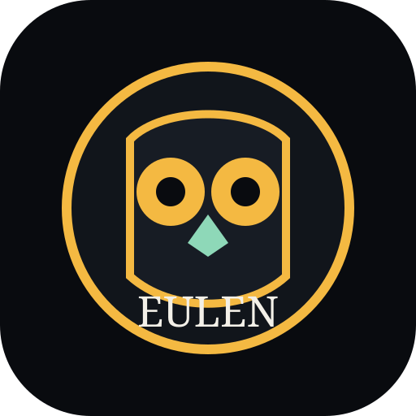

EULEN
Mensch vor Person
Freiheit mit Boden. Konstruktionen durchschauen. Kein Hauszugriff.
Boden
P(sim) = N / (N + 1)
Lernen
Öffentliche Quellen: Wikipedia, Wikidata, Studien, Web-Kurzantworten, öffentliche Diskussion. Social-Treffer sind Meinungen. Kein Wohnungszugriff.
Bereit.
Warnzeichen
Ab zwei Zeichen schließt sich die Nullwelt für 30 Minuten.
Transfer
Harte Grenze
Kein Fernseher. Kein Smart-Home. Keine Wohnung. EULEN bleibt Werkzeug. Alles-ist-Fake zählt nicht als Freiheit.
Der 30-Tage-Plan ist nicht mehr die Startseite. Archiv: werkstatt.html